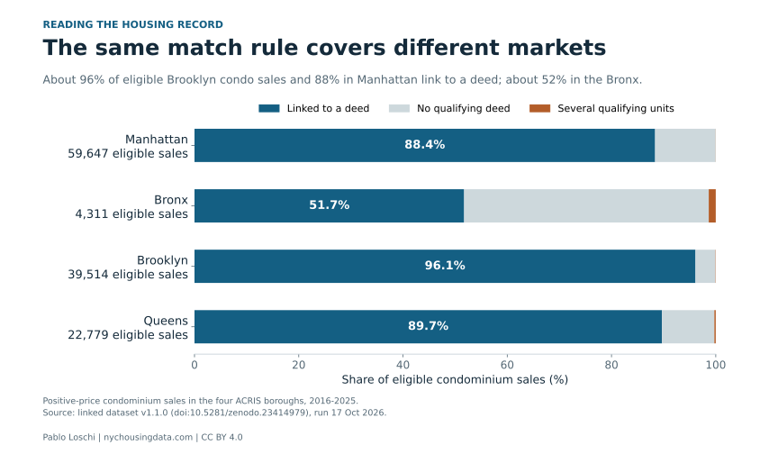

Two people make offers on the same $900,000 condo. One pays cash. The other puts 20% down and borrows $720,000, and at closing owes $13,860 in mortgage recording tax. The cash buyer owes none of it.
That gap is one of four places where New York makes buying a home harder or harder to measure, and where a fix would not need a single new building.
The bigger problem is supply. The city’s rental vacancy rate was 1.41% in 2023, according to the Housing and Vacancy Survey, and Mayor Zohran Mamdani’s administration has put building first. On 1 October it named 12 community districts for a faster rezoning review. Those districts produced 724 of the city’s 63,870 new affordable homes over the past five years.
The four changes below are about the homes that already exist and the records the city keeps on them. They come from my research linking about 729,000 sales from 2016 to 2025 to the deeds and mortgages filed with them.
1. Move the tax off the mortgage
Buyers who borrow pay 1.8% of the loan in recording tax, or 1.925% of the whole loan once it reaches $500,000. On financed house and condo purchases between $300,000 and $6 million in four boroughs, that adds up to about $244 million a year before credits and exemptions.


The city could raise the same money from every buyer instead. A charge of 0.88% of the price, or 1.56% of the part above $500,000, would bring in the same total from the same sales. About nine in ten buyers with a mortgage would pay less, around $5,000 on average, and cash buyers would pay $11,000 to $13,000 more.
For the $900,000 condo, the flat version would mean $7,920 for both buyers instead of $13,860 for one. These numbers assume the same sales take place, and part of today’s tax funds the MTA, so any replacement has to keep that money flowing. More on the recording tax.
2. Charge each rate on a slice of the price
New York’s mansion tax and the higher rates added in 2019 apply to the whole price once a sale crosses a threshold. A home at $1,999,999 owes $5,000 less than one at $2 million; at $5 million the step is $37,500.


After 2019, about six in ten sales that would have closed at exactly $2 million, $3 million or $5 million closed a few thousand dollars below the line. The rest still closed at the round price and paid the full jump. The full story of the $2 million line.
The United Kingdom switched in December 2014 to charging each rate only on the part of the price above its threshold. For New York sales of $2 million or more since 2020, a schedule built that way would raise the same $296 million a year, with 7% of those buyers paying more than now. New Jersey shows how strongly buyers react to a line: its 2004 fee exempts a sale at exactly $1 million, and the share of sales at that price still fell 91%.
3. Check the cash discount before taxing it
Mayor Mamdani’s tax package in March included a 1% tax on cash-only purchases above $1 million, according to Realtor.com. It was left out of the state budget passed in May.
The case for such a tax is that cash buyers pay less. In city records, houses bought for cash do sell for about 9% less than the same houses bought with a mortgage. About half of that gap disappears when sales between people who share a surname are set aside, and when a company pays cash the remaining gap is too small to tell from zero. How the cash discount shrinks.
Moving the recording tax onto every purchase would treat the two buyers alike without depending on that discount.
4. Publish the deed number and flag foreclosures
The city’s public sales file does not say which recorded deed belongs to which sale. Linking them takes matching rules, and those rules find a deed for 96% of Brooklyn condo sales but 52% in the Bronx.



Foreclosure transfers to lenders also appear in that file at amounts set by tax law, and they bend price indexes where foreclosures were concentrated. Adding the registry’s document number to each sale, and a flag for foreclosure transfers, would let anyone check these things directly. The Bronx condo gap · Foreclosure deeds in the sales file.
Counting matters for housing programs too. When I reran a published model of housing and poverty programs in Brazil, monthly cash aid appeared to reach 170 times as many households as buying homes for poor families. Counted as distinct families, the gap was 2.3 times.
What these changes would not do
None of them adds an apartment, and the tax figures hold the number of sales fixed, so they do not say who would ultimately bear each tax or how buyers and sellers would respond. The surname screen is a proxy for family sales, and matching coverage is not the same as verified accuracy.
Sources and methods
This article explains Pablo Loschi’s own research. Recording tax, swap and slice figures: The Shape of the Tax, v3.2, Supplemental Appendix Section I and the slice-schedule table (Zenodo). Cash discount: Who Gets the House?, v3.9. Condo coverage: linked dataset v1.1.0. Foreclosure deeds: When a Deed Is Not a Market Sale. Program counts: the PolicySpace2 audit in When the Benchmark Moves with the Policy (audit files).
Official and news sources: NYC HPD, 2023 Housing and Vacancy Survey; NYC Mayor’s Office, 1 October 2026; Realtor.com via Yahoo Finance, 26 March 2026.
Original article: CC BY 4.0. Credit Pablo Loschi, NYC Housing Data; identify edits. Underlying research releases retain their own terms.